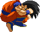
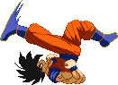

Flik Flak
After doing the backdash hop, pressing Back the moment you land from it will make
Goku do a reverse handspring, which he then can repeat it over and over every time you press Back the moment he lands from one.
These handsprings have invulnerability on the first two, but none after that.


Backdash Attack
Goku can perform one of his jumping attacks while backdashing.
More useful than you might think! You can catch someone as they run towards you.


standing medium punch chain
Standing combo extender, works from either a (close or far) standing medium kick or a far standing medium punch.


Uppercut
Main launcher tool. After hitting the opponent with it, press Up
to pursue them and set yourself up to perform an aircombo.


Boomerang Kick
Main tool for smashing opponents down to the ground during an aircombo. If an aerial opponent is hit by this move, they'll
fly to the ground and bounce up upon impact, allowing for a juggle combo. A version of this is also available as one of the follow-up options of his Hurricane Kick.

Turn Boomerang Kick
Works identical to the regular version, feature-wise.
This reverse version is useful when superjumping over an unsuspecting opponent and striking them over the head from behind with it.


Cartwheel Kick
Double hitting overhead attack, since it's a running attack it can cancel out of your Focus Attack.


Ki Blast
Excellent zoning tool. With LP, Goku fires a basic Ki Blast that travels straight ahead and not very fast.
The MP version lobs a Ki Blast on a relatively sharp angle, resulting in the blast landing about half a screen length away. This can be used to attack opponents above and incoming.
The SP version is another lobbing one but at a softer angle, making it land on the other side of the screen.
You're able to shoot out three of these Ki Blasts consecutively by just pressing forward+any Punch up to two times after doing the first one with QCF+P.
You can mix up the Weak, Medium and Strong versions. Has an EX version which fires projectiles that detonate into a sizeable explosion soon after launching them.


Dragon Dash
Both this and the next special move replace his Dragon Rekka he had before version 5.0.
QCB+P makes Goku dash forward across the screen, ready for action. Pressing any Kick button during this makes him stop in place.
The EX version dashes forward and switches sides with the opponent if Goku succeeds in getting close enough.
If you want to go on the offence, there are three options to choose from:
-LP - Dragon Tail, a low sweeping kick that trips.
-MP - Dragon Fist, an overhead smashing attack.
-SP - Dragon Upper. This is what you really want to use, at least for combos. This is the same Dragon Upper that was previously locked as the 3rd Dragon Rekka option. This version is way more fun to use, because it grants you more freedom to do what you want once it hits.
-LP - Dragon Tail, a low sweeping kick that trips.
-MP - Dragon Fist, an overhead smashing attack.
-SP - Dragon Upper. This is what you really want to use, at least for combos. This is the same Dragon Upper that was previously locked as the 3rd Dragon Rekka option. This version is way more fun to use, because it grants you more freedom to do what you want once it hits.

Turtle Flip
Another fun move that has multiple uses and follow-ups.
The initial leap has three different arcs depending on being performed with LK, MK or SK.
The EX version is also different and turns Goku into a multi-hitting cannonball.
As for your follow-up options, they are as follows:
-d+K - Slash-down Kick. Exact same move as the aerial QCF+K move. However if the EX version crossed up, Goku will turn around and dive kick towards them.
-K - Swoop Kick. A double-legged upwards kick, good for giving any aerial attacks a double boot.
-P - Primal Instincts. This is an air-to-ground grab but it also works air-to-air. Goku clings onto the opponent and bites into their cranium a few times before dismounting.
-d+K - Slash-down Kick. Exact same move as the aerial QCF+K move. However if the EX version crossed up, Goku will turn around and dive kick towards them.
-K - Swoop Kick. A double-legged upwards kick, good for giving any aerial attacks a double boot.
-P - Primal Instincts. This is an air-to-ground grab but it also works air-to-air. Goku clings onto the opponent and bites into their cranium a few times before dismounting.



Snap Kick
This is a Flash Kick, plain and simple. However Goku can get a bit more creative with it,
like repeating the LK version and then even doing a third variation in a row.
The EX version does two flash kicks while rising and ends with an overhead kick that knocks down.
The MK and SK versions have an ender option with d+K, which is an axe kick that knocks down.


Hurricane Kick (a.k.a. Tatsu, a.k.a. Banzai)
It's Goku's 'spin' on the Hurricane Kick.
He jumps up and forward at an arc, the distance depending on which button was pressed to activate it with.
The LK version knocks the opponent away but puts you back on the ground relatively fast, so you can chase them down.
The MK and moreso the SK versions carry the opponent up with you as you're dealing hits.
The EX version becomes the Super Hurricane Kick, Goku leaps even higher and deals a lot of hits.
All versions have two possible follow-ups (except the EX version which can only do the first of these two);
-f+K upon landing = Blur Kick. Goku busts out his standing strong kick, knocking the opponent away.
-b+K prior to landing = Boomerang Kick. Goku performs his jumping strong kick, which smashes the opponent down and causes a bounce-juggle when hitting an aerial opponent. Also, discovered by fans, performing the Boomerang Kick at the very last moment (just before landing) allows you to land without any recovery and instantly perform another Hurricane Kick, which can leads to some real wicked combos and birthed Tatsu Loops.
The aerial version doesn't arc upward but forward. The stronger the button input, the more forward range Goku will gain. Excellent way to finish off an aircombo with, especially with the Boomerang Kick option. As with all these type of moves, the bounce-juggle feature will only be triggered once during the same combo to prevent infinites.
-f+K upon landing = Blur Kick. Goku busts out his standing strong kick, knocking the opponent away.
-b+K prior to landing = Boomerang Kick. Goku performs his jumping strong kick, which smashes the opponent down and causes a bounce-juggle when hitting an aerial opponent. Also, discovered by fans, performing the Boomerang Kick at the very last moment (just before landing) allows you to land without any recovery and instantly perform another Hurricane Kick, which can leads to some real wicked combos and birthed Tatsu Loops.
The aerial version doesn't arc upward but forward. The stronger the button input, the more forward range Goku will gain. Excellent way to finish off an aircombo with, especially with the Boomerang Kick option. As with all these type of moves, the bounce-juggle feature will only be triggered once during the same combo to prevent infinites.

Slash-down Kick
Goku's dive kick, a must-have special move featured in most of the older games.
Upon hitting the opponent, you can choose to land and then start a basic combo string, or supercancel into his
aerial Kamehameha or Bicycle Kick. Weak version has a steep arc, while the Strong version has a wider angle and thus covering the most range.
The EX version has the Strong version's arc and hits three times.